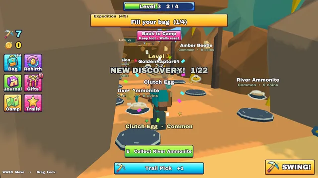
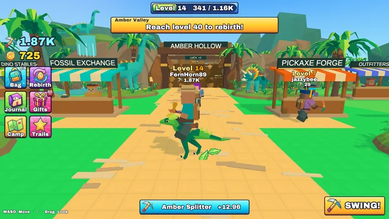

Od pięciu kliknięć do nowego kilofa
Kliknij pięć razy w obozie, żeby nabrać siły, i podejdź do ściany przy wejściu do kopalni. Gdy jesteś dostatecznie blisko, postać sama zaczyna uderzać kilofem. Na komputerze poruszasz się klawiszami WASD lub strzałkami, obracasz kamerę przeciągnięciem myszy i trenujesz siłę spacją. Na telefonie sterujesz ruchem po lewej stronie ekranu, a po prawej obracasz kamerę.
W pierwszej komorze podejdź do okazu i naciśnij E albo ekranowy przycisk akcji. Wypełnij cztery miejsca, wybierz Back to Camp (powrót do obozu) i sprzedaj zdobycz w skupie Fossil Exchange. Nawet cztery pospolite okazy z tej komory wystarczą na kilof Raptor Tooth za 32 monety. Kupisz go w kuźni Pickaxe Forge. Z tym kilofem każde kliknięcie daje dwa razy więcej siły niż z początkowym.

Co sprzedać, co wystawić i co zapisuje dziennik
Dziennik terenowy (J) zapamiętuje najwyższą odkrytą rzadkość w każdej z 22 rodzin okazów, wśród których są jaja, rogi i amonity. Po sprzedaży skamieniałości wpis pozostaje w kolekcji. Gdy podniesiesz okaz, na tej samej podstawie pojawi się przedstawiciel innej rodziny. Jeśli uzupełniasz dziennik, obejrzyj go, zanim ruszysz dalej.
Zanim sprzedasz cenny okaz, odwiedź muzeum Dr. Fern w zachodniej części obozu. Masz do dyspozycji dwie gabloty. Podstawowy dochód na minutę wynosi 1% łącznej wartości sprzedaży wystawionych okazów, także podczas twojej nieobecności. Sprzedaż przybliża cię do zakupu od razu. Wystawa opłaca się wtedy, gdy cenny okaz zostanie w gablocie na dłużej.

Jak zdobyć pierwszego dinozaura do jazdy
Jaja trafiają do kolekcji znalezisk. Po dinozaura do jazdy idź z monetami do stajni Dino Stables. Fernback Runner, pierwszy z dziewięciu wierzchowców, kosztuje 120 monet i mnoży przyrost siły przez 1,5. Jego premia działa razem z premią kilofa. Jeśli plecak regularnie zapełnia się przed następną komorą, za 96 monet możesz kupić pierwsze dodatkowe miejsce w sklepie Outfitters. Warto zacząć od plecaka, gdy więcej czasu tracisz na powroty niż na rozbijanie ścian.

Kiedy zejść głębiej, a kiedy wybrać odrodzenie
Za pierwszą komorą drogę do każdej następnej przegradzają trzy ściany. Im głębiej zejdziesz, tym większa szansa na rzadki okaz. Jeśli polujesz na lepszy wpis w dzienniku, zostaw miejsce na zdobycz z kolejnej komory. Powrót do obozu zachowuje siłę, wyposażenie, zawartość plecaka i rekord głębokości, ale odbudowuje wszystkie ściany. Po otwarciu czwartej komory możesz podczas tej wyprawy zjechać za darmo windą do pierwszej. Każda kolejna otwarta komora przesuwa przystanek o jedną dalej.

Na poziomie 20 możesz po raz pierwszy wybrać Rebirth, czyli odrodzenie. W podstawowym wariancie siła spada do zera. Zachowujesz sprzęt, monety, dziennik i bieżącą wyprawę, a stały mnożnik treningu rośnie z ×1 do ×1,6. Odblokowujesz też minerał treningowy Jade Spire. Jeśli ściana zaraz pęknie, dokończ ją, póki masz jeszcze siłę. Dalszym celem wypraw jest ostatnia z 24 komór, Primordial Vault. Jej otwarcie odblokowuje strój Prism Warden.